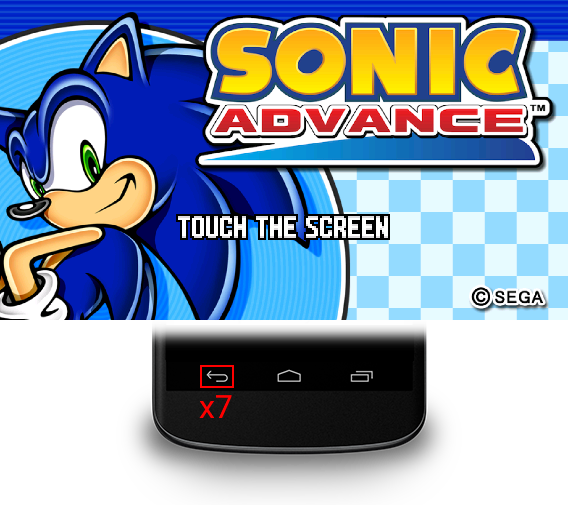

Sonic Advance International now features a cheat code that serves different purposes. This page explains how to use the cheat code and what consequences it has.
During the TOUCH THE SCREEN prompt, press 7 times on the BACK button of the Android navigation bar.
Once done correctly, you can hear a ring sound effect (or the Sonic Hacking Contest jingle if you are playing the SHC Edition).
DESCRIPTION:
Once the cheat activated, you can have access to every stage in the game and all Chaos Emeralds are obtained!
PRESERVING UNLOCKED STAGES:
The cheat will be active until you quit the game application. Meaning you have to use the cheat code anytime you want the stages unlocked.
However, if you want to keep the stages unlocked, even when quitting the application, you can do so by playing the last zone of each character.
DESCRIPTION:
Exclusive to the Sonic Hacking Contest Edition of the game is a hidden co-op game mode.
To unlock this game mode, activate the cheat and go to the character seelct menu. Then, go to Amy Rose and press the right arrow.
Once done correctly, the character select select will reappear and the SHC jingle will play. You will then see both Sonic with Tails.
In the character select menu, you have the option of 4 duos:
HOW TO PLAY IN CO-OP MODE:
Co-op mode plays like the regular game mode, but you have a partner on your side that mimicks your behaviors.
You can swap characters by double-tapping the right side of the screen. The camera will move to the other character when swapping.
WHY IS IT HIDDEN:
The co-op game mode is an idea from GdGohan that is put aside, due to time constraints for the Sonic Hacking Contest.
In fact, GdGohan even had more ideas to implement in the game, such as playing as Super Sonic in the regular stages, but those ideas are also put aside.
The reason for this game mode being locked is because this game mode is unfinished and full of glitches.
The glitches include partner death due to certain obstacles, soft-locking and even oddities such as the partner being unable to traverse loops.